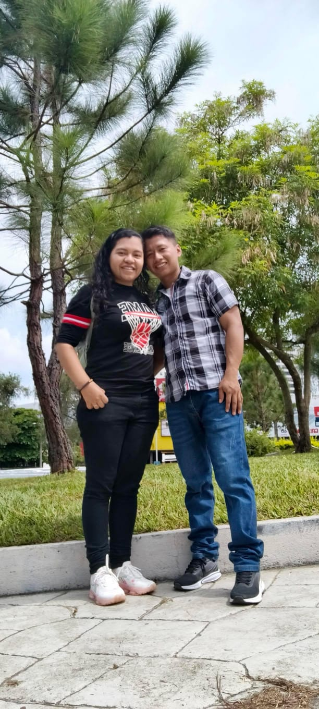

Hola, Amor!
Te quiero con todo mi corazón, con cada pensamiento bonito y con cada latido que me recuerda lo especial que eres para mí.
Eres mi alegría, mi calma y la razón por la que siempre quiero sonreír.
Tulipanes MI AMOR Nuestros Viajes Una canción
26/04/26 la fecha mas importante para mi llegaste tu a mi vida y ahora no quiero a nadie mas te amo muchoRazones por las que te amo
- Primera: Me encanta compartir tiempo contigo.
- Segunda: claramente eres la mejor novia del mundo.
- Tercera: Me siento feliz contigo por el amor que me brindas eres y seras siempre mi todo amor mio.
Tulipanes para la mas hermosa
Estos tulipanes me recuerdan ati en tan hermosa y perfecta que eres.
Nuestro corazón
QUEDATE
No quiero obligarte a que quieras quedarte
quiero que te quede porque te nace amarme
porque me miras y lo unico que puedes pensar es en mi sonrisa
Porque te gusta mi compañia
quedate por decision propia
no que pienses que me enojo si te miro con otro.
quiero que sea porque puedes cuidarme
darme lo necesario para que nada me falte
para que con solo mirarte sienta que el
aire meve nuestro cuerpo y altera
nuestro sentimientos.
Quiero que te quedes porque sabes amarme
y no porque estas acostumbrada que alguien
te ame.
Quedate porque quieres quedarte
no porque sientas que te obligo "AMARME"